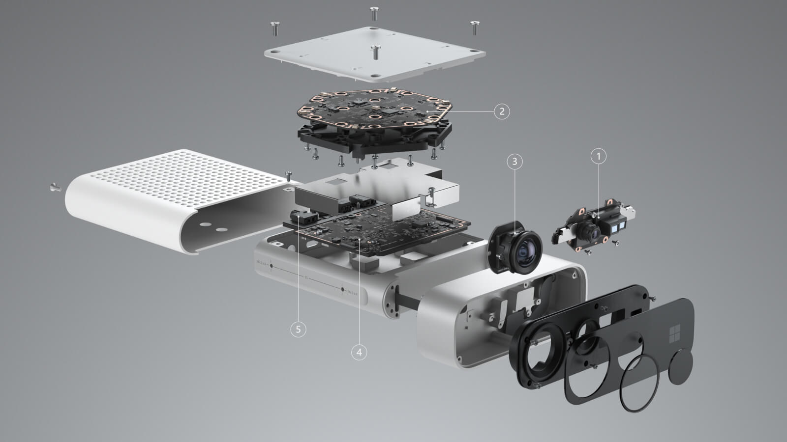
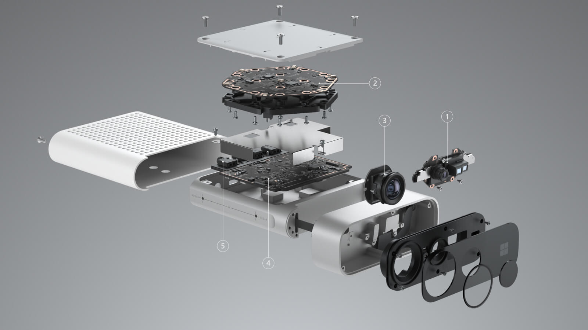

Term 2 Plan and Future Work
Data integration and GUI
For our next steps, we intend to deliver a simple graphical user interface along with a central storage location of the user’s health data. This would require some sort of communication between the two devices, and this would have to be cross-platform, as one device is Microsoft-only, and the other is iOS-only. For this, we could use the cloud, or possibly a server.
More Health Metrics
We plan to identify more possible results from the Kinect camera and Apple Watch, such as speed of moving, angle between bones and potentially posture recognition. These results may help us to get more health related metrics. However, this may prove complicated, given the way the Kinect tracks spinal movements: we hope this will improve with the Kinect Azure (coming out in March).
Hardware integration
In the future, we would like to integrate the Kinect and Apple Watch part hardware launch: ideally, we want an automatically synchronised launch. This wold be helpful in time-stamping the data for the students after each session.
Kinect: Azure
We would also switch the the latest Kinect technology, for more accurate data: the Azure Kinect, coming out in March 2020 in the United Kingdom, will
allow for multiple camera integration, with many other interesting features for calculating health metrics.
We would have liked to start this project with the Azure Kinect, but as it was not available in the United Kingdom.
Once we decided to use the Kinect 2, we chose to do our best to make our code compatible with this future upgrade.

 

Potential Idea: ARKit 3
We briefly discussed the possibility of also using Apple's ARKit 3 once it gains more research and documentation, as we'd entertained the idea of using this camera instead of the Kinect.
This would be helpful as most Apple Watch users are also iPhone users, but for now, the Kinect was still a better solution.
Our partners at Arthur Murray expressed potential interst in eventually developing a fully iOS version of this project.